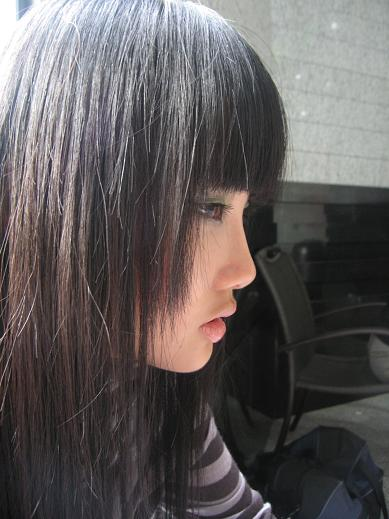
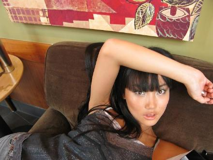
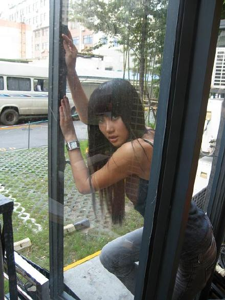
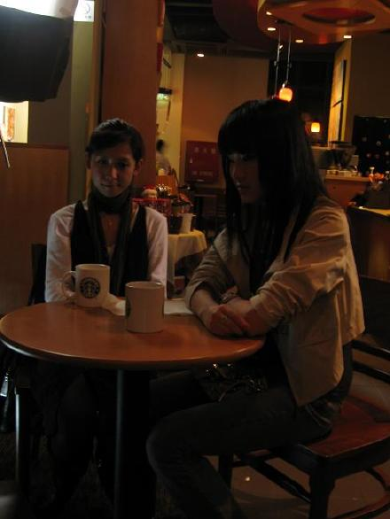
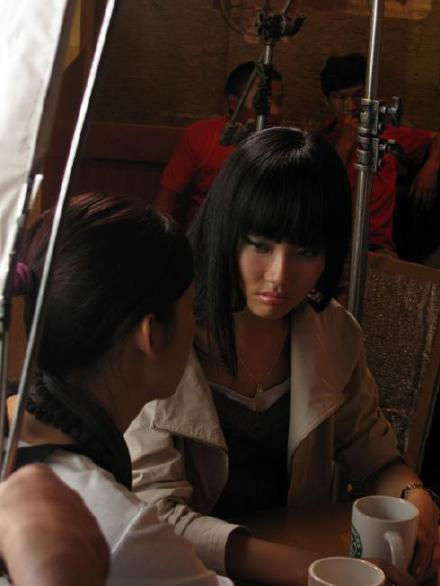
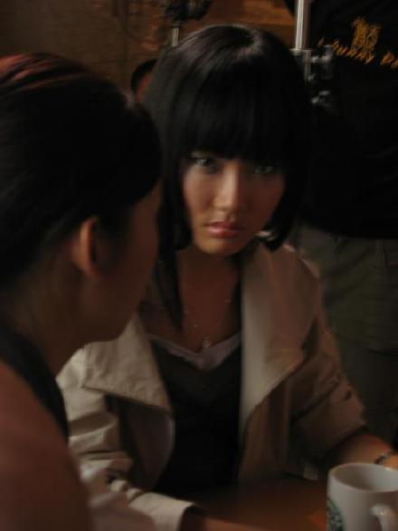

《晴天日记》花絮-星巴克...
自从拍了晴天日记,我几乎天天喝免费星巴克的星冰乐...一开始两天还喝的很幸福,毕竟在外面买也一杯也不便宜...到后来,也许是因为每天白吃白喝不用钱,就觉得没什么好喝,但是由于在星巴克公司拍摄,不喝有得喝,导致我现在路过星巴克一点想进去的欲望也没有了.哈哈
休息中的SUKI,喜欢这个角度的我...

这种扭曲的姿势,是躲在星巴克的一个角落里拍的...一般在公众场合,公司是不允许我这样的...太舒服了,就像我的歌《软绵绵》一样...其实我的脚是翘在旁边的桌子上的...

破窗而逃...

SUKI唯一的一场哭戏,本来开机那天就要拍哭戏的...不知道他们剧组左调整右调整..竟然放到杀青这天拍...害的我本来酝酿好的情绪都找回来了...

这场戏是说SUKI付不起妈妈的手术费,竟然是平时一直让她欺负的同时李晴把自己买房子的钱拿出来帮助SUKI付掉了这笔手术费...

其实杯子里面都是白开水...
